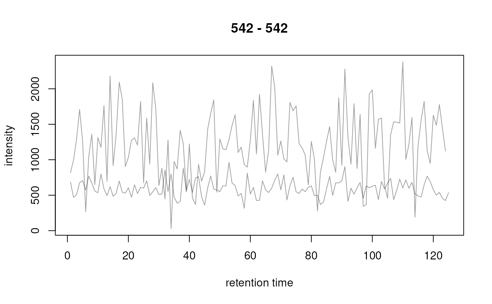

R/functions-MChromatograms.R, R/methods-MChromatograms.R
MChromatograms-class.RdThe MChromatograms class allows to store
Chromatogram() objects in a matrix-like
two-dimensional structure.
MChromatograms(data, phenoData, featureData, ...)
# S4 method for MChromatograms
show(object)
# S4 method for MChromatograms,ANY,ANY,ANY
[(x, i, j, drop = FALSE)
# S4 method for MChromatograms
[(x, i, j) <- value
# S4 method for MChromatograms,ANY
plot(
x,
col = "#00000060",
lty = 1,
type = "l",
xlab = "retention time",
ylab = "intensity",
main = NULL,
...
)
# S4 method for MChromatograms
phenoData(object)
# S4 method for MChromatograms
pData(object)
# S4 method for MChromatograms,data.frame
pData(object) <- value
# S4 method for MChromatograms
$(x, name)
# S4 method for MChromatograms
$(x, name) <- value
# S4 method for MChromatograms
colnames(x) <- value
# S4 method for MChromatograms
sampleNames(object)
# S4 method for MChromatograms,ANY
sampleNames(object) <- value
# S4 method for MChromatograms
isEmpty(x)
# S4 method for MChromatograms
featureNames(object)
# S4 method for MChromatograms
featureNames(object) <- value
# S4 method for MChromatograms
featureData(object)
# S4 method for MChromatograms,ANY
featureData(object) <- value
# S4 method for MChromatograms
fData(object)
# S4 method for MChromatograms,ANY
fData(object) <- value
# S4 method for MChromatograms
fvarLabels(object)
# S4 method for MChromatograms
rownames(x) <- value
# S4 method for MChromatograms
precursorMz(object)
# S4 method for MChromatograms
productMz(object)
# S4 method for MChromatograms
mz(object)
# S4 method for MChromatograms
polarity(object)
# S4 method for MChromatograms
bin(object, binSize = 0.5, breaks = numeric(), fun = max)
# S4 method for MChromatograms
clean(object, all = FALSE, na.rm = FALSE)
# S4 method for MChromatograms
normalize(object, method = c("max", "sum"))
# S4 method for MChromatograms
filterIntensity(object, intensity = 0, ...)
# S4 method for MChromatograms,Chromatogram
alignRt(x, y, method = c("closest", "approx"), ...)
# S4 method for MChromatograms
c(x, ...)
| data | for |
|---|---|
| phenoData | for |
| featureData | for |
| ... | for |
| object | a |
| x | for all methods: a |
| i | for |
| j | for |
| drop | for |
| value | for For `pData<-`: a `data.frame` with the number of rows matching the number of columns of `object`. For `colnames`: a `character` with the new column names. |
| col | for |
| lty | for |
| type | for |
| xlab | for |
| ylab | for |
| main | for |
| name | for |
| binSize | for |
| breaks | For |
| fun | for |
| all | for |
| na.rm | for |
| method |
|
| intensity | for |
| y | for |
For [: the subset of the MChromatograms object. If a
single element is extracted (e.g. if i and j are of length
1) a Chromatogram() object is returned. Otherwise (if
drop = FALSE, the default, is specified) a MChromatograms
object is returned. If drop = TRUE is specified, the method
returns a list of Chromatogram objects.
For `phenoData`: an `AnnotatedDataFrame` representing the pheno data of the object. For `pData`: a `data.frame` representing the pheno data of the object. For `$`: the value of the corresponding column in the pheno data table of the object. For all other methods see function description.
The MChromatograms class extends the base matrix class
and hence allows to store Chromatogram() objects in a
two-dimensional array. Each row is supposed to contain
Chromatogram objects for one MS data slice with a common
m/z and rt range. Columns contain Chromatogram objects from the
same sample.
MChromatograms are returned by a chromatogram() function from an MSnExp
or OnDiskMSnExp. Alternatively, the MChromatograms constructor function
can be used.
$ and $<-: get or replace individual columns of the object's phenodata.
colnames and colnames<-: replace or set the column names of the
MChromatograms object. Does also set the rownames of the phenoData.
fData: return the feature data as a data.frame.
fData<-: replace the object's feature data by passing a data.frame.
featureData: return the feature data.
featureData<-: replace the object's feature data.
featureNames: returns the feature names of the MChromatograms object.
featureNames<-: set the feature names.
fvarLabels: return the feature data variable names (i.e. column names).
isEmpty: returns TRUE if the MChromatograms object or all of its
Chromatogram objects is/are empty or contain only NA intensities.
mz: returns the m/z for each row of the MChromatograms object
as a two-column matrix (with columns "mzmin" and "mzmax").
pData: accesses the phenotypical description of the samples. Returns a
data.frame.
pData<-: replace the phenotype data.
phenoData: accesses the phenotypical description of the samples. Returns
an AnnotatedDataFrame object.
polarity: returns the polarity of the scans/chromatograms: 1, 0 or
-1 for positive, negative or unknown polarity.
precursorMz: return the precursor m/z from the chromatograms. The
method returns a matrix with 2 columns ("mzmin" and "mzmax") and as
many rows as there are rows in the MChromatograms object. Each row
contains the precursor m/z of the chromatograms in that row. An error is
thrown if the chromatograms within one row have different precursor m/z
values.
productMz: return the product m/z from the chromatograms. The method
returns a matrix with 2 columns ("mzmin" and "mzmax") and as many
rows as there are rows in the MChromatograms object. Each row contains
the product m/z of the chromatograms in that row. An error is thrown if
the chromatograms within one row have different product m/z values.
rownames<-: replace the rownames (and featureNames) of the object.
[ subset (similar to a matrix) by row and column (with parameters i
and j).
[<- replace individual or multiple elements. value has to be either a
single Chromatogram obhect or a list of Chromatogram objects.
c concatenate (row-wise) MChromatogram objects with the
same number of samples (columns).
filterIntensity: filter each Chromatogram() object within the
MChromatograms removing data points with intensities below the user
provided threshold. If intensity is a numeric value, the returned
chromatogram will only contain data points with intensities > intensity.
In addition it is possible to provide a function to perform the filtering.
This function is expected to take the input Chromatogram (object) and
to return a logical vector with the same length then there are data points
in object with TRUE for data points that should be kept and FALSE
for data points that should be removed. See the filterIntensity
documentation in the Chromatogram() help page for details and examples.
alignRt: align all chromatograms in an MChromatograms object against
the chromatogram specified with y. See documentation on alignRt in the
Chromatogram() help page.
bin: aggregates intensity values of chromatograms in discrete bins
along the retention time axis. By default, individual Chromatogram
objects of one row are binned into the same bins. The function returns a
MChromatograms object with binned chromatograms.
clean: removes 0-intensity data points. Either all of them
(with all = TRUE) or all except those adjacent to non-zero
intensities (all = FALSE; default). See clean() documentation for more
details and examples.
normalize, normalise: normalises the intensities of a chromatogram by
dividing them either by the maximum intensity (method = "max") or total
intensity (method = "sum") of the chromatogram.
plot: plots a MChromatograms object. For each row in the object one
plot is created, i.e. all Chromatogram() objects in the same row are
added to the same plot. If nrow(x) > 1 the plot area is split into
nrow(x) sub-plots and the chromatograms of one row are plotted in
each.
Chromatogram()] for the class representing chromatogram data. [chromatogram()] for the method to extract a MChromatogramsobject from aMSnExporOnDiskMSnExp object. [readSRMData() for the function to read chromatographic data
of an SRM/MRM experiment.
Johannes Rainer
## Creating some chromatogram objects to put them into a MChromatograms object ints <- abs(rnorm(25, sd = 200)) ch1 <- Chromatogram(rtime = 1:length(ints), ints) ints <- abs(rnorm(32, sd = 90)) ch2 <- Chromatogram(rtime = 1:length(ints), ints) ints <- abs(rnorm(19, sd = 120)) ch3 <- Chromatogram(rtime = 1:length(ints), ints) ints <- abs(rnorm(21, sd = 40)) ch4 <- Chromatogram(rtime = 1:length(ints), ints) ## Create a MChromatograms object with 2 rows and 2 columns chrs <- MChromatograms(list(ch1, ch2, ch3, ch4), nrow = 2) chrs#> MChromatograms with 2 rows and 2 columns #> 1 2 #> <Chromatogram> <Chromatogram> #> [1,] length: 25 length: 19 #> [2,] length: 32 length: 21 #> phenoData with 0 variables #> featureData with 0 variables## Extract the first element from the second column. Extracting a single ## element always returns a Chromatogram object. chrs[1, 2]#> Object of class: Chromatogram #> length of object: 19 #> from file: #> mz range: [NA, NA] #> rt range: [1, 19] #> MS level: 1## Extract the second row. Extracting a row or column (i.e. multiple elements ## returns by default a list of Chromatogram objects. chrs[2, ]#> MChromatograms with 1 row and 2 columns #> 1 2 #> <Chromatogram> <Chromatogram> #> [1,] length: 32 length: 21 #> phenoData with 0 variables #> featureData with 0 variables## Extract the second row with drop = FALSE, i.e. return a MChromatograms ## object. chrs[2, , drop = FALSE]#> MChromatograms with 1 row and 2 columns #> 1 2 #> <Chromatogram> <Chromatogram> #> [1,] length: 32 length: 21 #> phenoData with 0 variables #> featureData with 0 variables## Replace the first element. chrs[1, 1] <- ch3 chrs#> MChromatograms with 2 rows and 2 columns #> 1 2 #> <Chromatogram> <Chromatogram> #> [1,] length: 19 length: 19 #> [2,] length: 32 length: 21 #> phenoData with 0 variables #> featureData with 0 variables## Add a pheno data. pd <- data.frame(name = c("first sample", "second sample"), idx = 1:2) pData(chrs) <- pd ## Column names correspond to the row names of the pheno data chrs#> MChromatograms with 2 rows and 2 columns #> 1 2 #> <Chromatogram> <Chromatogram> #> [1,] length: 19 length: 19 #> [2,] length: 32 length: 21 #> phenoData with 2 variables #> featureData with 0 variables## Access a column within the pheno data chrs$name#> [1] "first sample" "second sample"#> mzmin mzmax #> [1,] NA NA #> [2,] NA NA## Data visualization ## Create some random Chromatogram objects ints <- abs(rnorm(123, mean = 200, sd = 32)) ch1 <- Chromatogram(rtime = seq_along(ints), intensity = ints, mz = 231) ints <- abs(rnorm(122, mean = 250, sd = 43)) ch2 <- Chromatogram(rtime = seq_along(ints), intensity = ints, mz = 231) ints <- abs(rnorm(125, mean = 590, sd = 120)) ch3 <- Chromatogram(rtime = seq_along(ints), intensity = ints, mz = 542) ints <- abs(rnorm(124, mean = 1200, sd = 509)) ch4 <- Chromatogram(rtime = seq_along(ints), intensity = ints, mz = 542) ## Combine into a 2x2 MChromatograms object chrs <- MChromatograms(list(ch1, ch2, ch3, ch4), byrow = TRUE, ncol = 2) ## Plot the second row plot(chrs[2, , drop = FALSE])